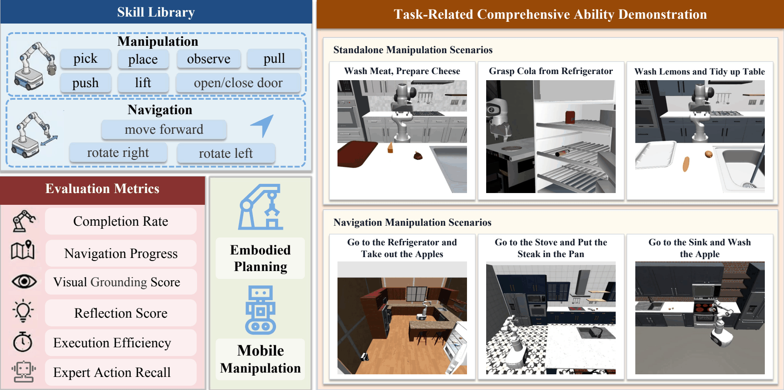
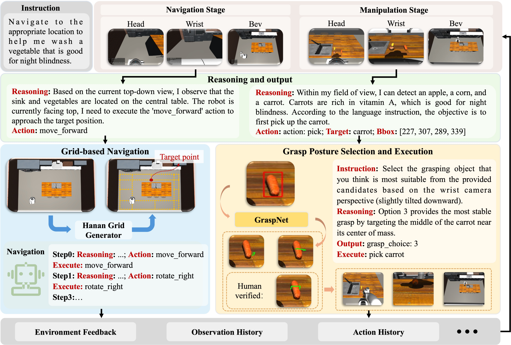

Although the advancement of vision-language models (VLMs) has endowed robots with enhanced environmental understanding and task reasoning, a comprehensive evaluation methodology is important to advance the integration of VLMs in robotic navigation and manipulation. However, current benchmarks lack a comprehensive method to evaluate diverse robotic tasks, and evaluation metrics remain relatively constrained, making it difficult to assess the embodied capabilities of VLMs in a thorough and fine-grained manner.
To address this issue, we propose RMMBench, an evaluation benchmark that requires robots to understand language instructions and perform long-horizon tasks in continuous spaces. RMMBench seamlessly integrates high- and low-level embodied tasks into a unified framework, constructing a “navigation–manipulation” task suite comprising 70 canonical task scenarios that range from localized manipulation to long-horizon composite navigation. The results reveal that leading VLMs still face major challenges in spatial localization when coping with mobile manipulation tasks, and also highlight the necessity of enhancing the spatial perception capability of robots during long-period interactions.

RMMBench requires VLM-based models to execute continuous-space, long-horizon mobile manipulation tasks based on language instructions and raw visual feedback. Evaluating this capability requires tight integration of sequential planning, spatial grounding, and closed-loop visual verification.

The demonstrations are organized into two parts: manipulation tasks and navigation tasks.
These interactive execution logs record the complete multi-step decision process of a VLM agent (Gemini-3-Flash) on RMMBench tasks, including the natural-language instruction, per-step visual observations, skill selections, bounding-box predictions, and environmental feedback. Each panel below is a scrollable mini window — scroll up and down inside a panel to walk through the episode step by step, or click “Open full log” to view the complete page.
@article{li2026rmmbench,
title = {RMMBench: A Comprehensive Benchmark for Robotic Mobile Manipulation},
author = {Li, Huapeng and Feng, Fuxiang and Fan, Jinqiu and Yang, Shuo and
Chen, Fengjiao and Cao, Xuezhi and Song, Ran and Zhang, Wei},
journal = {arXiv preprint arXiv:XXXX.XXXXX},
year = {2026}
}
This work was supported in part by the National Natural Science Foundation of China under Grant U22A2057, in part by the Key R&D Program of Shandong Province under Grant 2025CXGC010210, and in part by the Municipal-University Collaborative Development Project of Jinan under Grant JNSX2025002.